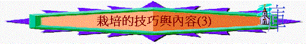

一.單對單栽培的技巧
1.要有好的引言
「有一個撒瑪利亞的婦人來打水。耶穌對他說：「請你給我水喝。」」約4:7
「耶穌回答說：「你若知道神的恩賜，和對你說『給我水喝』的是誰，你必早求他，他也必早給了你活水。」」約4:10
∼耶穌由喝水的事情引到活水----永生的問題
∼我們也要用問題或講解引起他動機學習這次栽培的真理主題/課題
∼引出今次栽培的目的及想學習的真理
2.適當身體語言
3.有自然的坐姿
4.有合適的比喻
「你們看那天上的飛鳥，也不種，也不收，也不積蓄在倉裡，你們的天父尚且養活他。你們不比飛鳥貴重得多嗎？你們那一個能用思慮使壽數多加一刻呢？何必為衣裳憂慮呢？你想野地裡的百合花怎麼長起來；他也不勞苦，也不紡線。然而我告訴你們，就是所羅門極榮華的時候，他所穿戴的，還不如這花一朵呢！」太6:26-29
5.多互動的分享
6.多從聖經而出
「你當竭力在神面前得蒙喜悅，作無愧的工人，按著正意分解真理的道。」提後2:15
7.定期重溫所學
8.靈活運用工具
二.教導的內容(3)
第七課：見證生活
「耶穌上船的時侯、那從前被鬼附著的人、懇求和耶穌同在。耶穌不許、卻對他說、你回家去、到你的親屬那裡、將主為你所作的、是何等大的事、是怎樣憐憫你、都告訴他們。那人就走了、在低加波利、傳揚耶穌為他作了何等大的事、眾人就都希奇。」可5:18-20
A.作見證的原因：主吩咐
B.作見證的內容：向人分享主在你身上所作的事(如何憐憫你，如何改變你)
C.作見證的對象：向親屬及其他人
∼鼓勵初信者分享自己得救的見證或一同參與教會佈道工作
第八課：受浸意義
「豈不知我們這受洗歸入基督耶穌的人是受洗歸入他的死嗎？」羅6:3
「所以，我們藉著洗禮歸入死，和他一同埋葬，原是叫我們一舉一動有新生的樣式，像基督藉著父的榮耀從死裡復活一樣。我們若在他死的形狀上與他聯合，也要在他復活的形狀上與他聯合；」羅6:4-5
「因為知道我們的舊人和他同釘十字架，使罪身滅絕，叫我們不再作罪的奴僕；因為已死的人是脫離了罪。」羅6:6-7
A.表明自己決心歸主(羅6:3)
B.表明自己與主同死(羅6:3,6:6-7)
C.表明自己與主同活(羅6:4-5)
∼挑戰初信主有否以上的認定？
∼講解教會受浸申請程序
第九課：長大成人
「他所賜的，有使徒，有先知，有傳福音的，有牧師和教師，為要成全聖徒，各盡其職，建立基督的身體，」弗4:11-12
「直等到我們眾人在真道上同歸於一，認識神的兒子，得以長大成人，滿有基督長成的身量，」弗4:13
「惟用愛心說誠實話，凡事長進，連於元首基督，」弗4:15
「全身都靠他聯絡得合式，百節各按各職，照著各體的功用彼此相助，便叫身體漸漸增長，在愛中建立自己。」弗4:16
∼信徒如何成長
A.在教會內接受裝備(弗4:11-12)
B.在真道上用心學習(弗4:13)
C.在生活中以主為首(弗4:15)
D.在肢體中彼此相助(弗4:10)
∼與初信者總結以往所學
∼鼓勵他繼續努力成長